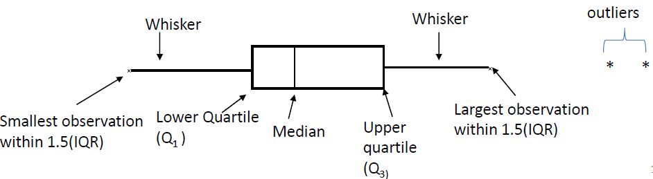
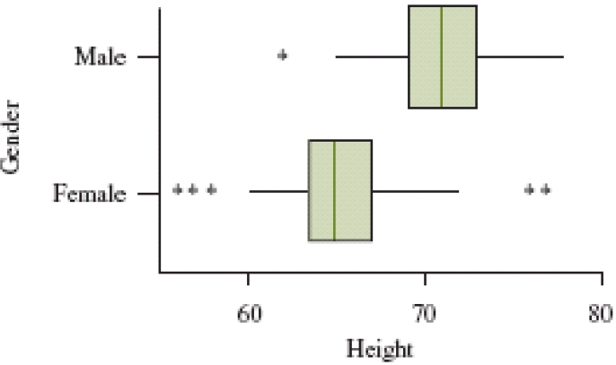
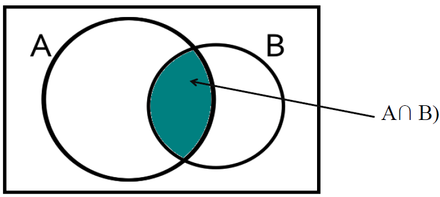

STAT 241 Jan 9, 2018 (Chapter 1.2)
Box Plot
- Determine central tedency, spread, skewness, and outliers
- Used for Quantitative data
- 5 summary measures:
- Smallest observation
- Lower quartile, Q1
- The median (Q2) of data
- Upper quartile, Q3
- Largest observation

- Do not display the shape of the distribution as clearly as histogram
- Make graphical comparisons of 2 or more distributions

Chapter 3 - Probability
Random Experiments
- Probabilities determine outcomes
- Same exact experiment can result in entirely different outcome
Sample Space
Set of all possible outcomes
- Each outcome has same probability
- probability is between 0 - 1
- total = 1
Event
Subset of the sample space
- Probability of event A (denoted P(A)), add probabilites of individual outcomes in event
- 0 <= P(A) <= 1
- P(A) = 0 = impossible
- P(A) = 1 = A always occurs
Set Theory for Events using Venn Diagrams
- Complement of Event - all outcomes that are not in the event
- Probabilities of event and complement add up to 1
- P(A^c) = 1 - P(A)
Intersection of 2 events
- Intersection of A and B is the set of elements common to them
- Denoted P(A and B)

Main Page